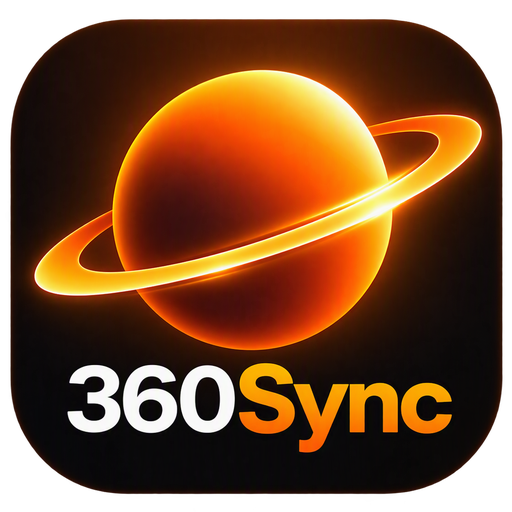

Each trigger shows a lap time box (wipes in, holds 10 s, wipes out) from that video frame. Drag the box to move it.

Flat, 360° and Insta360 video with synced motorsport telemetry, overlays and MP4 export.
The overlay shows the pit limiter between each From and To (video time), as well as wherever the data's Pit limiter channel is on.